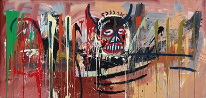

ANNA.
01 / AboutA meeting of disciplines
Different perspectives.
Shared possibilities.
Hi! My name is Anna, I am a 25-year-old Master's student in Industrial Design at HfG Offenbach. Through my combined background in science and design, I focus on developing innovative and sustainable products that inspire people in the long term and offer real added value.
With my multifaceted way of thinking and open approach to teamwork, I am ready to achieve great things together with others. It is important to me to critically question processes and create solutions that are thoughtful, aesthetically pleasing, and future-oriented.
Science × DesignThinking forward, together.
02 / A favoriteA personal point of view
An enduring
impression.
Art / 001
JEAN-MICHEL BASQUIAT
UNTITLED, 1982
ONE OF MY FAVORITE PAINTINGS
UNTITLED, 1982
ONE OF MY FAVORITE PAINTINGS